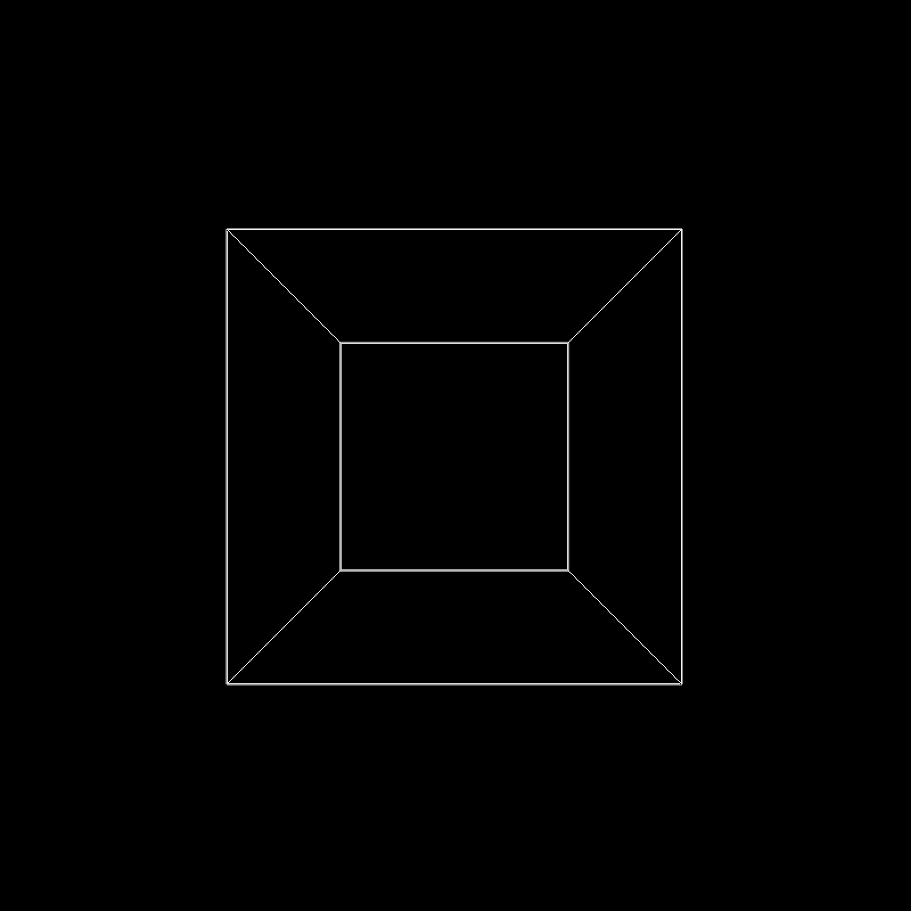
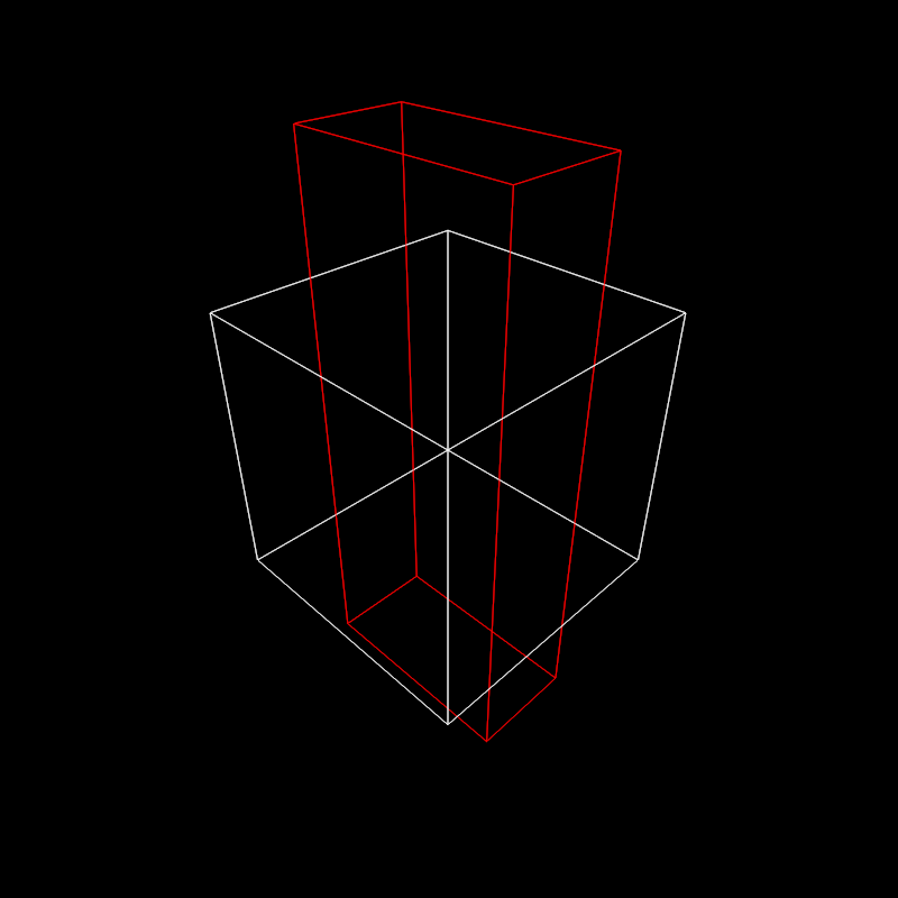
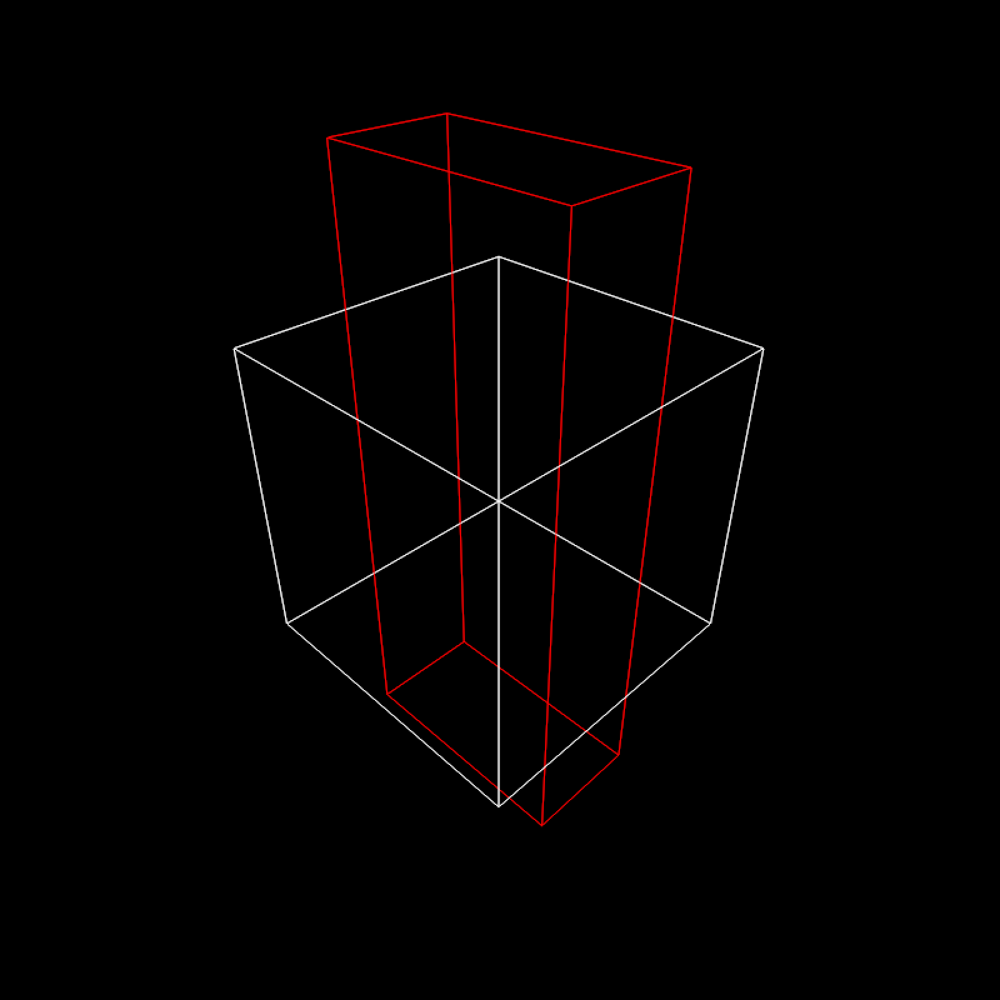

Render a 3D scene made out of lines using a software rasterizer.
rasterize_lines(
line_info = NULL,
filename = NA,
width = 800,
height = 800,
alpha_line = 1,
parallel = TRUE,
fov = 20,
lookfrom = c(0, 0, 10),
lookat = NULL,
camera_up = c(0, 1, 0),
color = "red",
background = "black",
debug = "none",
near_plane = 0.1,
far_plane = 100,
block_size = 4,
ortho_dimensions = c(1, 1),
bloom = FALSE,
antialias_lines = TRUE
)Arguments
- line_info
The mesh object.
- filename
Default
NULL. Filename to save the image. IfNULL, the image will be plotted.- width
Default
400. Width of the rendered image.- height
Default
400. Width of the rendered image.- alpha_line
Default
1. Line transparency.- parallel
Default
TRUE. Whether to use parallel processing.- fov
Default
20. Width of the rendered image.- lookfrom
Default
c(0,0,10). Camera location.- lookat
Default
NULL. Camera focal position, defaults to the center of the model.- camera_up
Default
c(0,1,0). Camera up vector.- color
Default
darkred. Color of model if no material file present (or for faces using the default material).- background
Default
white. Background color.- debug
Default
"none".- near_plane
Default
0.1.- far_plane
Default
100.- block_size
Default
4.- ortho_dimensions
Default
c(1,1). Width and height of the orthographic camera. Will only be used iffov = 0.- bloom
Default
FALSE. Whether to apply bloom to the image. IfTRUE, this performs a convolution of the HDR image of the scene with a sharp, long-tailed exponential kernel, which does not visibly affect dimly pixels, but does result in emitters light slightly bleeding into adjacent pixels.- antialias_lines
Default
TRUE. Whether to anti-alias lines in the scene.
Value
Rasterized image.
Examples
if(run_documentation()) {
#Generate a cube out of lines
cube_outline = generate_line(start = c(-1, -1, -1), end = c(-1, -1, 1)) |>
add_lines(generate_line(start = c(-1, -1, -1), end = c(-1, 1, -1))) |>
add_lines(generate_line(start = c(-1, -1, -1), end = c(1, -1, -1))) |>
add_lines(generate_line(start = c(-1, -1, 1), end = c(-1, 1, 1))) |>
add_lines(generate_line(start = c(-1, -1, 1), end = c(1, -1, 1))) |>
add_lines(generate_line(start = c(-1, 1, 1), end = c(-1, 1, -1))) |>
add_lines(generate_line(start = c(-1, 1, 1), end = c(1, 1, 1))) |>
add_lines(generate_line(start = c(1, 1, -1), end = c(1, -1, -1))) |>
add_lines(generate_line(start = c(1, 1, -1), end = c(1, 1, 1))) |>
add_lines(generate_line(start = c(1, -1, -1), end = c(1, -1, 1))) |>
add_lines(generate_line(start = c(1, -1, 1), end = c(1, 1, 1))) |>
add_lines(generate_line(start = c(-1, 1, -1), end = c(1, 1, -1)))
rasterize_lines(cube_outline,fov=90,lookfrom=c(0,0,3))
}
#> Setting `lookat` to: c(0.00, 0.00, 0.00)

if(run_documentation()) {
#Scale the cube uniformly
scaled_cube = color_lines(scale_lines(cube_outline,scale=0.5),color="red")
rasterize_lines(add_lines(cube_outline,scaled_cube),fov=90,lookfrom=c(0,0,3))
}
#> Setting `lookat` to: c(0.00, 0.00, 0.00)
 if(run_documentation()) {
#Scale the cube non-uniformly
scaled_cube = color_lines(scale_lines(cube_outline,scale=c(0.8,2,0.4)),color="red")
rasterize_lines(add_lines(cube_outline,scaled_cube),fov=60,lookfrom=c(3,3,3))
}
#> Setting `lookat` to: c(0.00, 0.00, 0.00)

if(run_documentation()) {
#Scale the cube non-uniformly
scaled_cube = color_lines(scale_lines(cube_outline,scale=c(0.8,2,0.4)),color="red")
rasterize_lines(add_lines(cube_outline,scaled_cube),fov=60,lookfrom=c(3,3,3))
}
#> Setting `lookat` to: c(0.00, 0.00, 0.00)
